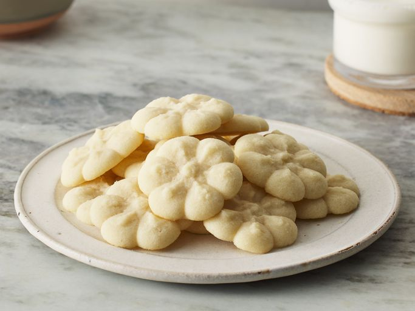

Home
short bread cookie recipe
This shortbread cookie recipe makes deliciously buttery shortbread cookies using just 4 easy ingredients. They're easy to decorate and perfect for holiday cookie trays.

Ingredients:
- 2 cups butter, softened
- 1 cup white sugar
- 2 teaspoons vanilla extract
- 4 cups all-purpose flour
Steps:
- Gather all ingredients.
- Preheat the oven to 350 degrees F (180 degrees C).
- Beat softened butter and sugar together in a large bowl with an electric mixer until light and fluffy.
- Stir in vanilla; add flour and mix well until combined.
- Fill cookie press with dough and form cookies onto two ungreased cookie sheets, spacing them about 1 ½ inches apart. Bake until the edges of the cookies are just starting to turn golden brown, about 10 to 12 minutes.
- Remove the cookie sheets from the oven, and set them on a wire cooling rack for a few minutes. Then transfer the shortbread cookies to the rack to cool completely.